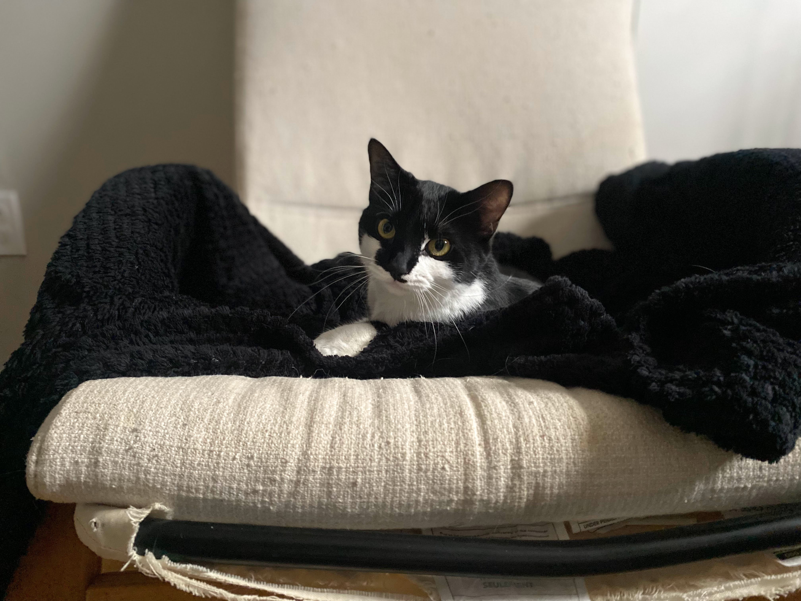
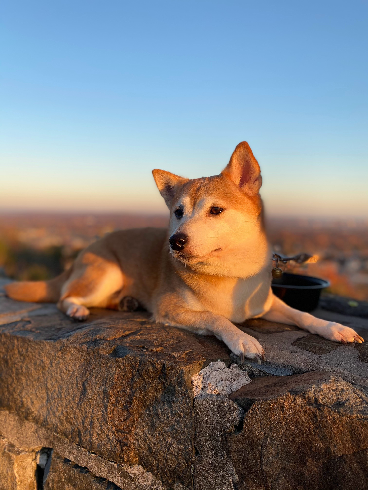
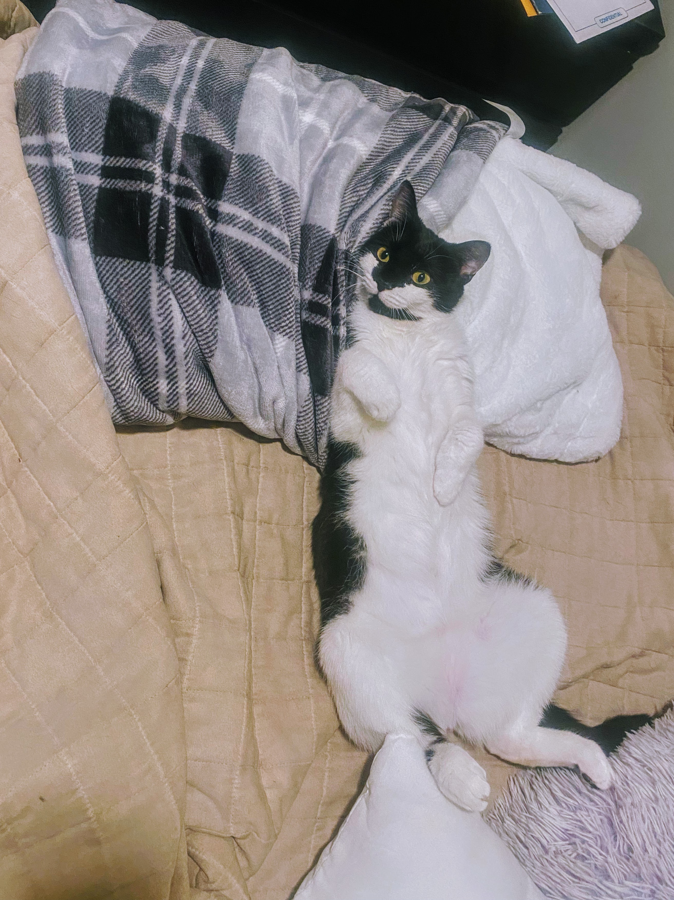
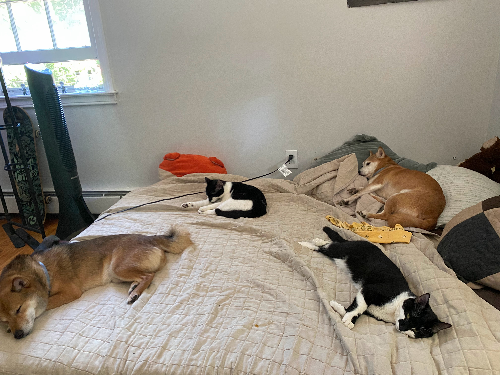
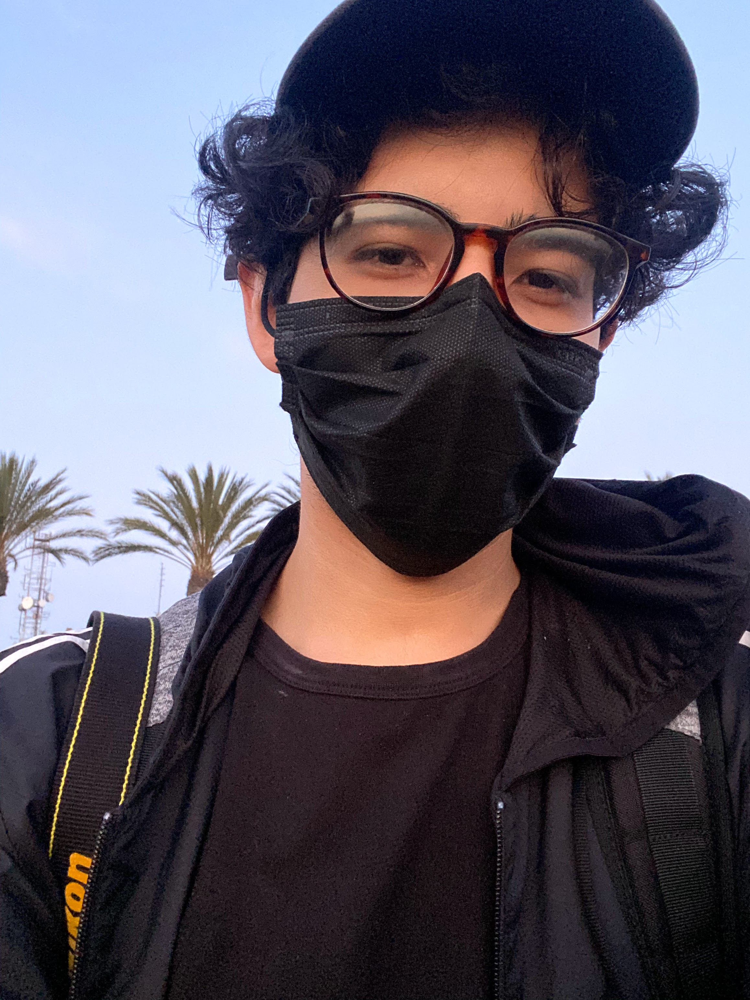

I entered the world of Web Development on July 2022, with no prior experience or knowledge, I braced myself for the new territory I was going to uncover. A few months later, I am now understanding the languages of HTML, CSS, SCSS, JavaScript, and MySQL.
After all the new software languages and slangs I learn, I am a very home-body person. I love playing video games as much as I did when I was a kid, just with a bit gaps of needed responsobility. I play the bass and electric guitar, while knowing a little bit of piano. If you haven't got the memo yet, I love music.
I am a father to four wild, rebellious children. Two pure breed shiba inus who's names are Max (male, 8yo) and Bell (female, 7yo). The other two are tuxedo cats named Kiwi (female, 2yo) and Oreo (female, 2yo). They will be the reason why I stay up late working on the next project since they never want to sleep.
Other than finding time to spend with the most important people in my life, I enjoy hiking, reading a book, making sure the plants in my house are taken care of, and waiting until the end of the day to have dinner with my favorite person to watch the next episode of whatever show we watch (currently bob's burgers).
 